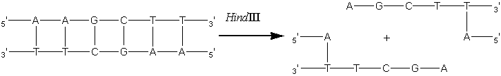
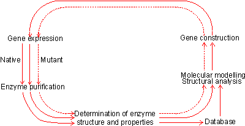
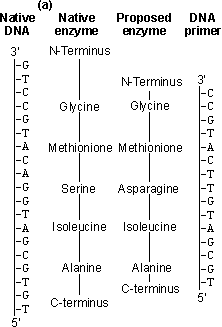
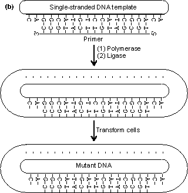

|
|
Enzyme engineeringA most exciting development over the last few years is the application genetic engineering techniques to enzyme technology. A full description this burgeoning science is beyond the scope of this text but some suitable references are given at the end of this chapter. There are a number of properties which may be improved or altered by genetic engineering including the yield and kinetics of the enzyme, the ease of downstream processing and various safety aspects. Enzymes from dangerous or unapproved microorganisms and from slow growing or limited plant or animal tissue may be cloned into safe high-production microorganisms. In the future, enzymes may be redesigned to fit more appropriately into industrial processes; for example, making glucose isomerase less susceptible to inhibition by the Ca2+ present in the starch saccharification processing stream. The amount of enzyme produced by a microorganism may be increased by increasing the number of gene copies that code for it. This principle has been used to increase the activity of penicillin-G-amidase in Escherichia coli. The cellular DNA from a producing strain is selectively cleaved by the restriction endonuclease HindIII. This hydrolyses the DNA at relatively rare sites containing the 5'-AAGCTT-3' base sequence to give identical 'staggered' ends. cleaved DNA" width="726" height="111">
[8.4] The total DNA is cleaved into about 10000 fragments, only one of which contains the required genetic information. These fragments are individual cloned into a cosmid vector and thereby returned to E. coli. These colonies containing the active gene are identified by their inhibition of a 6-amino-penicillanic acid-sensitive organism. Such colonies are isolated and the penicillin-G-amidase gene transferred on to pBR322 plasmids and recloned back into E. coli. The engineered cells, aided by the plasmid amplification at around 50 copies per cell, produce penicillin-G-amidase constitutively and in considerably higher quantities than does the fully induced parental strain. Such increased yields are economically relevant not just for the increased volumetric productivity but also because of reduced downstream processing costs, the resulting crude enzyme being that much purer.  Figure 8.1. The protein engineering cycle. The process starts with the isolation and characterisation of the required enzyme. This information is analysed together with the database of known and putative structural effects of amino acid substitutions to produce a possible improved structure. This factitious enzyme is constructed by site-directed mutagenesis, isolated and characterised. The results, successful or unsuccessful, are added to the database, and the process repeated until the required result is obtained. Another extremely promising area of genetic engineering is protein engineering. New enzyme structures may be designed and produced in order to improve on existing enzymes or create new activities. An outline of the process of protein engineering is shown in Figure 8.1. Such factitious enzymes are produced by site-directed mutagenesis (Figure 8.2). Unfortunately from a practical point of view, much of the research effort in protein engineering has gone into studies concerning the structure and activity of enzymes chosen for their theoretical importance or ease of preparation rather than industrial relevance. This emphasis is likely to change in the future. As indicated by the method used for site-directed mutagenesis (Figure 8.2), the preferred pathway for creating new enzymes is by the stepwise substitution of only one or two amino acid residues out of the total protein structure. Although a large database of sequence-structure correlations is available, and growing rapidly together with the necessary software, it is presently insufficient accurately to predict three-dimensional changes as a result of such substitutions. The main problem is assessing the long-range effects, including solvent interactions, on the new structure. As the many reported results would attest, the science is at a stage where it can explain the structural consequences of amino acid substitutions after they have been determined but cannot accurately predict them. Protein engineering, therefore, is presently rather a hit or miss process which may be used with only little realistic likelihood of immediate success. Apparently quite small sequence changes may give rise to large conformational alterations and even affect the rate-determining step in the enzymic catalysis. However it is reasonable to suppose that, given a sufficiently detailed database plus suitable software, the relative probability of success will increase over the coming years and the products of protein engineering will make a major impact on enzyme technology. Much protein engineering has been directed at subtilisin (from Bacillus amyloliquefaciens), the principal enzyme in the detergent enzyme preparation, Alcalase. This has been aimed at the improvement of its activity in detergents by stabilising it at even higher temperatures, pH and oxidant strength. Most of the attempted improvements have concerned alterations to:
It has been found that the effect of a substitution in the P1 cleft on the relative specific activity between substrates may be fairly accurately predicted even though predictions of the absolute effects of such changes are less successful. Many substitutions, particularly for the glycine residue at the bottom of the P1 cleft (Gly166), have been found to increase the specificity of the enzyme for particular peptide links while reducing it for others. These effects are achieved mainly by corresponding changes in the Km rather than the Vmax. Increases in relative specificity may be useful for some applications. They should not be thought of as the usual result of engineering enzymes, however, as native subtilisin is unusual in being fairly non-specific in its actions, possessing a large hydrophobic binding site which may be made more specific relatively easily (e.g., by reducing its size). The inactivation of subtilisin in bleaching solutions coincides with the conversion of Met222 to its sulfoxide, the consequential increase in volume occluding the oxyanion hole. Substitution of this methionine by serine or alanine produces mutants that are relatively stable, although possessing somewhat reduced activity.  Figure 8.2. An outline of the process of site-directed mutagenesis, using a hypothetical example. (a) The primary structure of the enzyme is derived from the DNA sequence. A putative enzyme primary structure is proposed with an asparagine residue replacing the serine present in the native enzyme. A short piece of DNA (the primer), complementary to a section of the gene apart from the base mismatch, is synthesised. (b) The oligonucleotide primer is annealed to a single-stranded copy of the gene and is extended with enzymes and nucleotide triphosphates to give a double-stranded gene. On reproduction, the gene gives rise to both mutant and wild-type clones. The mutant DNA may be identified by hybridisation with radioactively labelled oligonucleotides of complementary structure. An example of the unpredictable nature of protein engineering is given by trypsin, which has an active site closely related to that of subtilisin. Substitution of the negatively charged aspartic acid residue at the bottom of its P1 cleft (Asp189), which is used for binding the basic side-chains of lysine or arginine, by positively charged lysine gives the predictable result of abolishing the activity against its normal substrates but unpredictably also gives no activity against substrates where these basic residues are replaced by aspartic acid or glutamic acid. Considerable effort has been spent on engineering more thermophilic enzymes. It has been found that thermophilic enzymes are generally only 20-30 kJ more stable than their mesophilic counterparts. This may be achieved by the addition of just a few extra hydrogen bonds, an internal salt link or extra internal hydrophobic residues, giving a slightly more hydrophobic core. All of these changes are small enough to be achieved by protein engineering. To ensure a more predictable outcome, the secondary structure of the enzyme must be conserved and this generally restricts changes in the exterior surface of the enzyme. Suitable for exterior substitutions for increasing thermostability have been found to be aspartate ® glutamate, lysine ® glutamine, valine ® threonine, serine ® asparagine, isoleucine ® threonine, asparagine ® aspartate and lysine ® arginine. Such substitutions have a fair probability of success. Where allowable, small increases in the interior hydrophobicity for example by substituting interior glycine or serine residues by alanine may also increase the thermostability. It should be recognised that making an enzyme more thermostable reduces its overall flexibility and, hence, it is probable that the factitious enzyme produced will have reduced catalytic efficiency.
This page was established in 2004 and last updated by Martin
Chaplin |